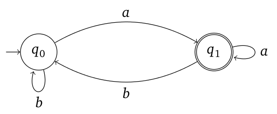

During my time in university, I have done several meaningful and interesting projects, here are some of those I am most pround of.
Software Projects:
1. Alien Shooting Flash Game
This project is a game written by python and pygame that allows the space ship to shoot the aliens.
What we are supposed to create, is a game that includes one player, which is shown as a spaceship in the game There is going to be a group of aliens, alinged in a group, and they are the enemies that we will need to kill. The spaceship have some bullets that could be shooted out, and these bullets could kill the aliens. There are also several GUI and some other resitrictions in the game that we will need to implement in order for it to be working correctly.
The code itself contains around 1000 lines of code, and they are broken up into several different modules, such as the wave, which is to control each wave of aliens, the model class, which is the basic settings for the spaceship, alliens and the bullets. Finally there is also an app module, which is the general controller of the application.
Github: Alien Shooting Game
Source: CS110 A7
2. LTL interpreter
This project is a interpreter written by Ocaml that transfers a natural language that follows LTL rules into an automata graph.
This is a tool that can translate everyday language into something a machine understands. LTL logic, which is the Linear Temporal Language (LTL) will be transformed into Büchi Automata.
This converter takes in strictly-formatted human language, parses and synthesizes it into a simplified Linear Temporal Logic expression, and converts it into a reliable Büchi automaton that is visualized and verifiable. With the automaton being generated, the user is able to verify if their subsequent tentative actions is executable.
Github: Interpreter
Electrical projects:
1. Tide Clock
In general, our system works by sending tidal data from the FRDM-KL46Z board using skills we learned this semester, and then use the arduino to receive and process the data, which finally controlls the LED strip to turn on and off showcasing the tide.
In this project, we accomplished and practices a lot of skills that we learn in this class. For example, in hardware, we practiced wire soldering a lot in the project. Then, in the FRDM-KL46Z code, we accomplished sending data using UART serial communication, as well as the real-time scheduling that we learned by the end of the semester. Finally, in Arduino code, we accomplished receiving data in UART, as well as data decode and other programming skills.
Github: Tide Clock

2. Embedded Mahjong Player
Mahjong is a type of Chinese board game where four players are required for a game. Often times, people find it hard to always find four people for the game, often there are only three. Therefore, it became a problem that a fourth player is needed. To solve this problem, our team worked on the embedded mahjong player, so that it can play along as the extra player to help start the game.
Our project first uses the Pi Camera to take photos of Mahjong tiles, and uses the photos to train the computer vision model, and then uses the trained model to identify the tiles. Next, the Mahjong algorithm would determine which tile it should play this round, and send the instruction to the PiTFT and servo to indicate the played tile. Displays and buttons on the PiTFT are also used as round controls.
Github: Mahjong Bot